×
×Arte certa,
na janela certa,
em escala.
Proposta técnica da 75 LAB · embalagem, trade marketing e material de PDV · resposta ao RFQ de 23 de outubro, entrega em 30 de outubro de 2026
Ideia boa é a que acontece2.174 peças por ano10.870 rodadas de arte101 linhas · 303 preçosEmbalagem · Trade · PDVVersão sob controle
Ideia boa é a que acontece2.174 peças por ano10.870 rodadas de arte101 linhas · 303 preçosEmbalagem · Trade · PDVVersão sob controle
A conta não está na peça, está na rodada. E a rodada se controla.
01 · O escopoO que a Arcor compra10.870rodadas de arte por ano
2.174 peças, cada uma com entrega e quatro alterações inclusas. Quem conta peças descobre o resto na terceira alteração.
02 · A teseOnde está o risco139peças técnicas ou legais
O risco não está em criar: está em errar em escala. Prazo, conformidade e versão decidem esta conta.
03 · Como contratarDuas formas303preços preenchidos, sem ressalva
A planilha vai inteira. E recomendamos a capacidade dedicada: o mesmo escopo fica 15,6% abaixo em regime.
04 · Quem operaTime com nome12pessoas, cada uma com substituto
7 na criação própria, 2 dedicados à conta, 2 na adaptação de arte e 1 na revisão, com backup declarado.
Realidade aumentada no escopo: a peça é aprovada dentro da loja, sem custo adicional.
IA com revisão humana: a camada que não cansa na décima rodada, e toda liberação tem nome.
Produção gerida por nós: cotação garantida e acompanhamento até a loja montada.
Capítulo 01 de 07
O escopo
O escopo
de vocês
A leitura que fizemos da planilha do RFQ, linha por linha, antes de propor qualquer coisa.
- 01Aderência ao RFQ
- 02As rodadas de arte
- 03Onde está o volume
- 04Modelagem, não layout
- 05A tese
01O escopo de vocês02Quem é a 75 LAB03Provas04Como contratar05Como operamos06Além da criação07Na prática
(01) Aderência ao RFQ de 23 de outubro
Cada exigência do RFQ tem endereço nesta proposta
Dá para conferir a aderência antes de abrir qualquer outra página. O que vem depois é a leitura que fizemos do escopo de vocês, e ela não substitui nenhuma linha daqui.
9 exigências9 respostas0 ressalvas
O que o RFQ pedeOnde está a resposta
- 2Tabela de preço unitário, 101 linhas e 3 níveis303 células preenchidas, sem ressalva de linha nem de categoria
- 3Classificação por complexidadecritério aplicado na entrada da pauta, antes de executar
- 4Até 04 alterações inclusas por peçainclusas no preço unitário, por tipo de peça
- 4A partir da 5ª, propor percentual15% do valor unitário, por rodada
- 4Valores com impostos inclusosos 303 valores já incluem
- 4Pagamento em 75 dias após a NFaceito, e considerado no preço
- 4Itens fora da tabela aprovados por Comprasaceito, com regra de classificação declarada
- 5Uso de IA, ferramentas e aplicaçãocapítulo 05, tela de inteligência artificial
- 6Proposta alternativa, à partearquivo separado, como pedido
Item do RFQTotal de ressalvas: 0
Clique na linha para ir à resposta
(01) O que entendemos do escopo de vocês
Não são 2.174 peças, são até 10.870 rodadas de arte
Peças por ano · o que a tabela conta2.174
×
Rodadas por peça · condição do RFQ5
=
Rodadas por ano · o que o preço carrega10.870
Entrega1 rodada
Alteração 1inclusa
Alteração 2inclusa
Alteração 3inclusa
Alteração 4inclusa
8.696 dessas rodadas são alteração inclusa: 80% do trabalho do contrato não aparece na contagem de peças.
181peças por mês
8,6peças por dia útil
906rodadas por mês
43rodadas por dia útil
Implicação
O custo desta conta não está na peça, está na rodada. Quem dimensiona a estrutura contando peças descobre isso na terceira alteração. No formato 02, item 3.1.n do RFI, não há valor extra por rodada, nem na quinta nem na décima.
(01) O que entendemos do escopo de vocês
Cinco linhas concentram 65% do volume, e quarenta e nove não têm peça nenhuma
49serviços sem pedido declarado
Não somam valor nenhum a esta proposta, porque a quantidade é zero, mas estão cotados nos três níveis: se vocês pedirem qualquer um, o preço já está acordado.
AnúncioEncarteMala diretaManualRelatórioPlanograma
Implicação
A estrutura se dimensiona pelas cinco primeiras linhas. O resto da tabela é preço garantido, não equipe parada.
(01) O que entendemos do escopo de vocês
Um quinto do escopo é modelagem, não layout
22,4%
488 peças de modelagem tridimensional
Por complexidade · o que a planilha declara
Baixa1.065 · 49,0%Média254 · 11,7%Alta855 · 39,3%
O que é modelagem, na mesma régua do total
Modelagem488 · 22,4%total do escopo · 2.174
397mockups em simulação 3D
91ajustes de planta técnica de embalagem
“Necessidade de criação de ativos visuais exclusivos, como ilustrações, personagens, composições gráficas complexas ou modelagens tridimensionais.”RFQ, item 3.3 · critério de alta complexidade
Implicação
Este escopo pede 3D e arquitetura dentro de casa. Os dois designers 3D e os dois arquitetos que fazem esse trabalho já estão no time, e não entram no preço da peça como repasse.
O risco não está em criar.
Está em errar em escala.
Em embalagem de alimento, o erro não volta como retrabalho.
Prazo
Arte certa fora da janela de sell-in vale zero.
Conformidade
139 peças do escopo são planta técnica ou atualização legal.
Versão
Quem não sabe o que foi para a gráfica descobre na gôndola.
Implicação
A agência se escolhe pela capacidade de controlar versão e conformidade em volume, não pelo portfólio criativo, que todos os concorrentes têm.
Capítulo 02 de 07
Quem é
Quem é
a 75 LAB
Por que existimos, o que nos diferencia e quem responde pela conta.
- 01Propósito
- 02Diferencial
- 03A estrutura
- 04Quem responde pela conta
- 05Nossos números
- 06Clientes
01O escopo de vocês02Quem é a 75 LAB03Provas04Como contratar05Como operamos06Além da criação07Na prática
Transformar intenção em realidade no ponto de venda.
A 75 LAB nasceu da soma de dois lados que quase nunca se sentam à mesma mesa: o varejo e a indústria. Por mais de 15 anos vivemos a distância entre a intenção comercial de uma marca e o que de fato acontece na loja. Existimos para fechar essa distância.
IndústriaLançamento, categoria, P&Lo lado de quem vende para o varejo
 ← valor →
← valor →VarejoLayout, execução, aprovaçãoo lado de quem opera a loja
Na imprensa · o que os sócios defendem em público
propmark.com.br
Ideia boa é a que acontece.
Criamos o que gostaríamos de ter tido como clientes.“A grande agência tradicional aprendeu trade marketing. Nós vivemos isso.”Daniel Coimbra, cofundador da 75 LAB · PropmarkClique para ler a matéria ↗propmark.com.br/artigos/criamos-o-que-gostariamos-de-ter-tido-como-clientes gironews.com
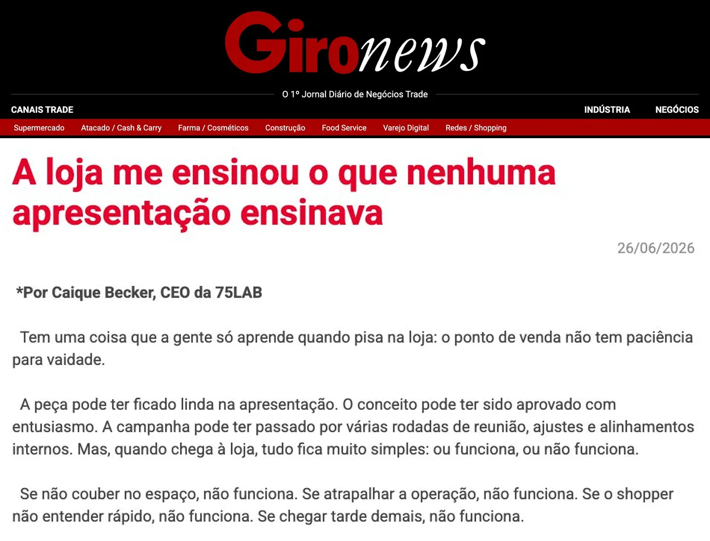
A loja me ensinou o que nenhuma apresentação ensinava.“Execução não é uma consequência da estratégia. Execução é parte da estratégia.”Caique Becker, cofundador da 75 LAB · Giro News, 26/06/2026Clique para ler a matéria ↗gironews.com/opinioes/a-loja-me-ensinou-o-que-nenhuma-apresentacao-ensinava
Não somos uma agência tradicional. Somos uma aceleradora de trade.
Modelo tradicional
BriefingRetrabalhoAtrasoVerba evapora
Modelo 75 LAB
IntençãoImersãoSoluçãoExecuçãoResultado
01Vivemos o trade, não só aprendemos
Os sócios vêm do varejo e da indústria: os dois lados do balcão estão na mesma mesa.
02Solução certa, nunca de prateleira
Montamos a estrutura pela demanda de cada cliente, não um pacote pronto.
03Para cada desafio, a equipe certa
Hub de especialistas e fornecedores, com governança ponta a ponta e sem markup oculto.
04Prova acima de promessa
Medimos o que entregamos: peça a peça, loja a loja.
0%projetos aprovados
−0%de custo de produção com o fornecedor certo
0+PDVs positivados
+0anos no trade, dos dois lados do balcão
Fonte: 75lab.com.br, números da 75 LAB.
Montamos a estrutura, não só a peça.
A 75 LAB é uma aceleradora de trade marketing, parceira de desenvolvimento de negócios. Não entregamos um formato de prateleira: montamos a estrutura e os projetos pela demanda de cada cliente. O modelo se apoia em quatro frentes, e elas vivem na mesma casa.
Uma casaFrente 01
Leitura de canal, calendário integrado e ordem da fila. É o que decide o que entra primeiro quando embalagem, trade e PDV disputam a mesma semana.
Direção de arte, arte-final, engenharia de peça e planta técnica de embalagem. Uma só direção para embalagem, trade e PDV, que é o que sustenta a unidade de marca da Arcor.
Coordenamos cotação, protótipo, QA e logística, e vocês não ficam limitados à nossa rede: trabalhamos com os fornecedores já homologados por vocês, com os nossos parceiros, ou com os dois. Podemos indicar novos, mas a homologação segue sendo processo de vocês.
Ariuno para demandas e entregas, SharePoint como repositório e controle de versão, rastreio peça a peça e AR antes de produzir. É frente própria, não um extra de proposta.
Estratégia
Leitura de canal, calendário integrado e ordem da fila. É o que decide o que entra primeiro quando embalagem, trade e PDV disputam a mesma semana.
Os dois lados do balcão, na mesma mesa.
É o mesmo time que opera a conta, não uma equipe montada para a concorrência.
0anos
Daniel Coimbra
de trade marketing, do lado de quem vende para o varejo
0anos
Caique Becker
de varejo, do lado de quem operou a loja
(✓) Os dois lados da mesa em que a Arcor está
KraftMondelezUnileverWhirlpoolGPAExtraMinuto Pão de Açúcar
Alimento é exatamente de onde viemos
Lemos a planilha de vocês como quem já preencheu uma do outro lado
 Quem responde pela conta é quem opera.
Daniel CoimbraCaique Beckercofundadores da 75 LAB
Quem responde pela conta é quem opera.
Daniel CoimbraCaique Beckercofundadores da 75 LAB
A 75 LAB em números: a operação que já rodamos hoje.
0entregas concluídas em 12 meses, entre jobs e etapas
0jobs concluídos de ponta a ponta no mesmo período
0clientes com demanda aberta nos últimos 12 meses
0jobs ativos ao mesmo tempo no pico, em 26/10/2026
0clientes atendidos em paralelo nesse mesmo pico
0dias úteisprazo mediano do pedido à entrega em baixa complexidade
0dias úteisprazo mediano em alta complexidade: stands, enxovais e obras
0h/mêsde trabalho apontadas tarefa a tarefa, de julho a setembro
Dados da própria 75 LAB, não de cliente. Fonte: Ariuno, sistema de gestão da 75 LAB · 28/10/2025 a 27/10/2026 · horas apontadas de jul a set/2026. Baixa complexidade: jobs com até 8 h de trabalho; alta: acima de 16 h.
Já trabalhamos a gôndola onde a Arcor vive.
Supermercado, atacado e conveniência são a lógica de ponto de venda do escopo de vocês, e as marcas de alimento que atendemos vivem nela. Hershey’s e Polenghi já passaram por esta casa.
Canal alimentarsupermercado, atacado e conveniência


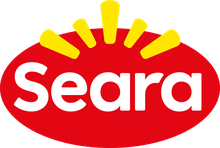


Varejo especializadoloja de categoria, eletro, farma e beleza


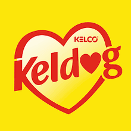

Resposta aos itens 3.1.j, 7.1 e 7.2 do RFI: a referência pode ser pedida a qualquer uma dessas marcas.
Capítulo 03 de 07
Provas
Gôndola de alimento e projetos da 75 LAB em vídeo, com quem já viveu um cronograma com a gente.
- 01Cases de ponto de venda
- 02Depoimento e vídeos de projetos
01O escopo de vocês02Quem é a 75 LAB03Provas04Como contratar05Como operamos06Além da criação07Na prática
(03) Cases · material de ponto de venda
Alimento na gôndola é terreno de casa
Biscoito, laticínio, congelado e pet. Categoria com giro, prazo curto e painel legal, que é onde a Arcor vive.
“Desde a primeira reunião, me surpreenderam com essa parte de planejamento.
“Um programa viável de execução. Datas de aprovações, datas de execução, finalização para a entrega do stand.”
Marcelo AbreuAlltak
Projetos da 75 LAB em vídeo
Clique num vídeo para assistir no celular ao lado
Vídeos de projetos da 75 LAB: Instagram @setecincolab, site 75lab.com.br e acervo de cases.
Capítulo 04 de 07
Como
Como
contratar
A planilha preenchida como o RFQ pede, e a proposta alternativa que a conta recomenda.
- 01A sazonalidade que a tabela não mostra
- 02Duas formas de contratar
- 03Formato 01 · preço por peça
- 04Formato 02 · capacidade dedicada
01O escopo de vocês02Quem é a 75 LAB03Provas04Como contratar05Como operamos06Além da criação07Na prática
(04) Sazonalidade · item 3.1.l do RFI
A tabela é um total anual, e não diz em que semana
181
peças por mês é a média. Numa casa que embala ovo de Páscoa, a média não acontece em mês nenhum.
JanFevMarAbrMaiJunJulAgoSetOutNovDez
média da planilha · 181 por mês
?o pico de Páscoa
não está na planilha
não está na planilha
As cinco linhas de Páscoa, como vêm declaradas
- Embalagem de Páscoa · etiqueta adesiva15
- Embalagem de Páscoa · envoltório2
- Embalagem de Páscoa · ovo0
- Embalagem de Páscoa · lenço0
- Criação de brindes · Páscoa0
A leitura honesta: cinco linhas próprias e 17 peças declaradas, três em zero. Ou o volume corre por dentro das linhas genéricas, ou ainda não está na tabela. Nos dois casos a conta de capacidade muda.
Implicação
A estrutura se dimensiona pelo pico, e o pico não está nesta planilha. Com o calendário de vocês na mão, capacidade deixa de ser promessa e vira conta.
(04) Proposta Alternativa · item 6 do RFQ
São duas formas de contratar, e recomendamos a segunda
A planilha vai preenchida integralmente, como a seção 2 pede. O formato 02 é a Proposta Alternativa do item 6: um pacote de horas com equipe nomeada que fica na conta.
O mesmo escopo, nos dois formatos · índice, preço por peça = 100
100,0
Formato 01preço por peça, como o RFQ pede89,3−10,7%
Formato 02 · ano 1com o núcleo em rampa84,4−15,6%
Formato 02 · em regimedo segundo anoDe onde vem a diferença
Equipe que fica acumula a régua legal, a biblioteca de modelos e o critério de quem aprova. Por peça, a criação é alocada caso a caso e tudo isso é reaprendido toda vez.
O que vocês assumem em troca
Um compromisso de volume. Corte de escopo no meio do contrato encontra estrutura já reservada. É o único ponto em que o formato 01 protege mais, e por isso ele continua valendo.
Implicação
Vocês podem assinar a planilha como ela está e nós entregamos. A recomendação existe porque a conta aponta para outro lugar, e esconder isso seria pior do que dizer.
A diferença não é desconto: é hora que deixa de ser gasta, porque a equipe fica na conta e acumula o escopo de vocês. Pagamento em 75 dias após a NF, aceito e considerado nos dois formatos.
(04) Formato 01 · preço por peça, como o RFQ pede
Quatro rodadas já estão no preço, e a quinta tem regra escrita antes
É o formato da planilha de vocês e a lógica que vocês já usam: preço unitário com impostos, nas 101 linhas e nos três níveis.
Entrega
Alteração 1
Alteração 2
Alteração 3
Alteração 4
5ª em diante15%
já está pago no preço unitário
O que já está pago
O preço de cada peça carrega quatro rodadas de alteração. Não é cortesia nem letra miúda: é hora orçada dentro do unitário.
Por que 15%
Sai da conta, não do gosto: uma rodada vale cerca de 10% do preço da peça em hora, e os 15% cobrem o custo de interromper uma fila já ordenada.
Implicação
A regra existe para ninguém descobrir o preço depois. Quando a quinta chegar, o valor já estava escrito desde a assinatura e vocês decidem antes de pedir. No formato 02 esta cobrança não existe.
(04) Formato 02 · capacidade dedicada · a nossa recomendação
O pacote se escolhe pela demanda de vocês, não pelo nosso tamanho
As 2.174 peças declaradas consomem 1.638 horas de equipe por mês. Cada degrau reserva uma fatia dessa conta, e a hora fica mais barata conforme a fatia cresce.
Horas de equipe por mês · o pacote contra a demanda de vocês
demanda hoje · 1.638 h
com o núcleo, no ano 1 · 1.488 h · −9%
G · o núcleo mais a maior parte da cauda
Cobre só o que mais gira. O resto vai para hora extra todo mês, e a conta se inverte.As cinco linhas que somam 65% do volume ficam dentro. A cauda sai por hora extra.O G encosta na linha da demanda. É o degrau que mais rende por hora sem pagar folga.O GG passa da linha: cobre tudo, mas paga folga que não é usada, e folga tem preço.
Clique em cada degrau
O G encosta na linha da demanda. É o degrau que mais rende por hora sem pagar folga.
Núcleo dedicado
Equipe exclusiva da Arcor. O tempo de desenvolvimento cai 9% no ano 1 e 15% em regime, e o mesmo pacote cobre mais pedido a cada trimestre.
Refação sem limite
A capacidade é de vocês. Refazer dez vezes é decisão legítima: o custo aparece na fila, não em fatura.
Hora extra só depois do limite
Enquanto houver hora no pacote não existe cobrança adicional, e vocês veem o consumo antes de ele estourar.
Capítulo 05 de 07
Como
Como
operamos
Quem opera a conta, por onde a pauta passa e onde a inteligência artificial entra.
- 01O time, com nome e substituto
- 02Fluxo, versão e entrega
- 03O Ariuno da Arcor, passo a passo
- 04Uso de inteligência artificial
01O escopo de vocês02Quem é a 75 LAB03Provas04Como contratar05Como operamos06Além da criação07Na prática
(05) Capacidade de atendimento · bloco 3 do RFI
Quem opera a conta Arcor tem nome, e tem substituto
O bloco 3 do RFI pergunta item a item quem existe na estrutura. Esta é a resposta, e vale como compromisso.
3.1.a7Equipe própria de criação
direção, 3D, gráficos sênior e arquitetura
backup: entre si
3.1.b2Dedicados ao cliente
ponto focal: fila, prioridade e classificação
backup: um ao outro, e a direção aos dois
3.1.f2Adaptação de arte
as 351 artes existentes e os 145 ajustes de texto
backup: célula de criação
3.1.c1Revisão e qualidade
checagem técnica, legal e de texto
backup: diretor de criação
Ritmo da contaPauta semanalStatus quinzenalCiclo mensalCalendário trimestralFora do horário, item 3.1.h: sim, quando solicitado.
Implicação
O item 3.1.i pergunta se existe operação de backup para férias e ausências. Aqui ela vem com nome em vez de um sim: férias, saída e pico não param a fila, porque a cobertura está declarada antes de começar.
(05) Sistemas de gestão · Ariuno, versionamento e processo
Entrada, versão e entrega vivem num sistema, e vocês enxergam as três
Entrada únicapauta no Ariuno
Classificaçãobaixa · média · alta
Filadistribuída e visível
Criaçãorodadas registradas
RevisãoIA e revisor humano
Aprovaçãoquem aprovou e quando
EntregaSharePoint
Controle de versões · uma peça, cinco rodadas
v1entregav2alteração 1v3alteração 2v4alteração 3v5vigente · foi para a gráfica
01Ariuno, a gestão de entradas e saídas
Como a pauta entra, como é distribuída, como se acompanha a fila e o que a Arcor enxerga sem precisar pedir.
02Controle de versões
Onde a versão vive, como se sabe qual é a vigente e o registro de quem aprovou e quando.
03Processo ponta a ponta
Entrada única, classificação de complexidade na entrada, revisão e entrega, com SharePoint como repositório.
04Prazos por complexidade
Prazo em dias úteis para baixa, média e alta, contado do briefing completo, prazo de retorno de cada rodada e o que acontece quando um prazo falha.
Entrada, saída e avaliação de cada material, passo a passo.
EntradaSaídaAvaliação
Sem login: o trade de vocês abre o link da campanha e marca as peças. As peças do escopo já vêm mapeadas por canal (trade e PDV, embalagem, materiais de apoio) e tipo de campanha.
A peça que vale para vários formatos vira uma por formato: supermercado, atacarejo e conveniência. Na demonstração, 8 pedidas viram 14.
O time entrega a arte dentro da própria peça e ela passa a aparecer como esperando vocês. Cada versão fica guardada com data e autor.
Vocês aprovam ou marcam o ajuste em cima da peça: ponto numerado, seta, área destacada, anexo e print colado.
Aprovadas, esperando vocês, em ajuste, em criação e sem arte. As aprovadas entram no quadro de produção num card por campanha.
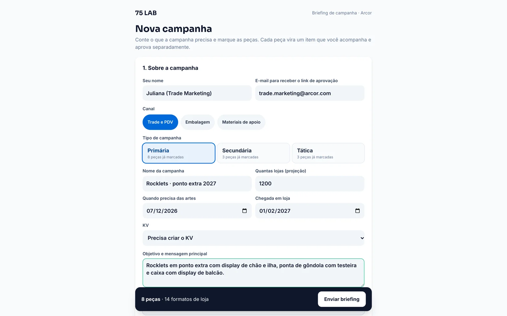
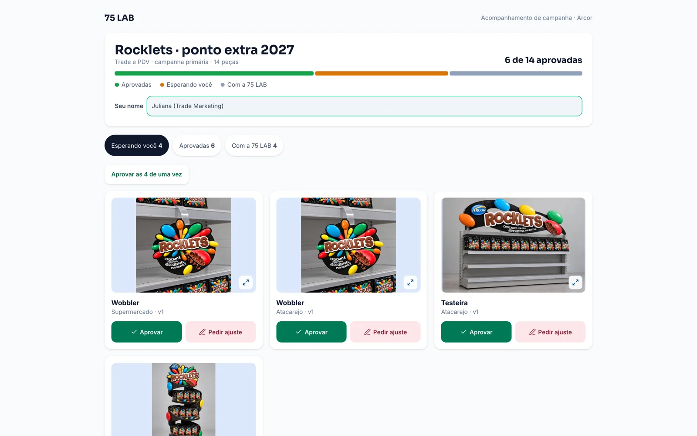
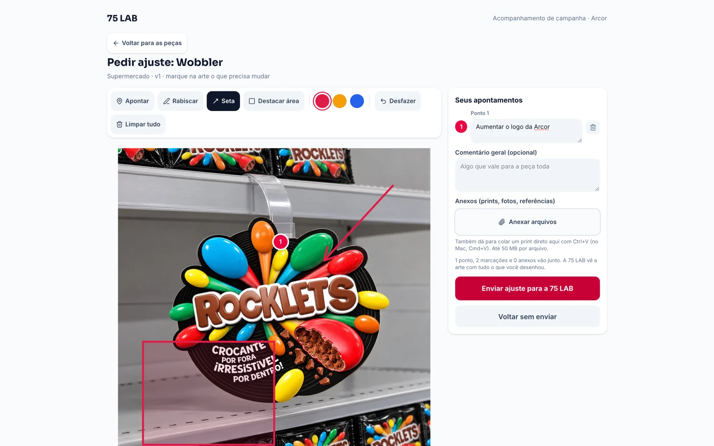
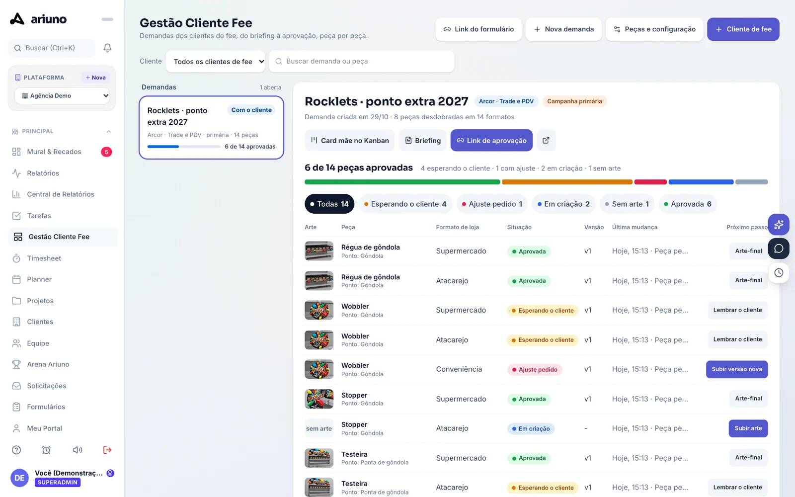
Passo 1 de 5
Fonte: Ariuno, sistema de gestão da 75 LAB, em modo demonstração · campanha de exemplo Rocklets · ponto extra 2027, com conceitos de PDV da 75 LAB.
(05) Uso de inteligência artificial · item 5 do RFQ
A IA não substitui o time, ela pega o que o olho humano deixa passar
Numa pauta de 10.870 rodadas por ano, o risco não é a peça difícil: é a peça repetida em que ninguém olha com a mesma atenção da primeira vez. A IA é a camada que não cansa na décima.
Peçarodada nova
Camada de IA
01Revisão textual garantida
Ortografia, coerência e diferença entre versões, antes da revisão humana. O revisor chega sabendo o que mudou.
02Rastreio de erro
O que mudou de uma versão para a seguinte fica registrado. Em 422 peças de embalagem com painel legal, é o que pega o erro silencioso.
03Velocidade no repetível
O desdobramento a partir de peça aprovada sai mais rápido. Vira capacidade, não prazo prometido menor.
Revisor humanolibera com nome
O que continua sendo trabalho humano
KV e conceito criativo, direção de arte, ilustração e personagem, texto legal e regulatório, assinatura técnica de planta e faca, e a liberação de toda peça, com nome. Usamos Claude e ChatGPT, e só eles.
Como o material de vocês é protegido
Arquivo de cliente não alimenta modelo público e material sob confidencialidade não entra em ferramenta de IA. LGPD com registro de quem acessou o quê.
Implicação
O nosso papel não é rodar prompt e subir arquivo: é decidir o que entra, o que volta e o que pode sair. Quem assina a peça continua tendo nome, e é com esse nome que vocês falam.
Capítulo 06 de 07
Além da
Além da
criação
A arte não termina no arquivo: termina na loja montada, e dá notícia de si depois.
- 01Acompanhamento de produção
- 02Realidade aumentada, antes de produzir
- 03Rastreio de PDV, depois de enviar
01O escopo de vocês02Quem é a 75 LAB03Provas04Como contratar05Como operamos06Além da criação07Na prática
(06) Além da criação · acompanhamento de produção
A arte não termina no arquivo, termina na loja montada
Arte aprovada que produz errado vira retrabalho que ninguém orçou. Não somos gráfica nem indústria: temos rede de parceiros homologados e garantimos a cotação, que é o que uma agência de criação não faz.
01AntesEspecificação
Planta técnica, substrato, acabamento e faca saem junto com a arte, não depois dela.
02AbertaCotação garantida
Mapa comparativo com critério declarado, e respondemos pelo preço e pelo prazo que cotamos. Se o fornecedor for de vocês, cotamos contra ele sem disputar a conta.
03No chãoAcompanhamento
Prova de cor, piloto aprovado antes da tiragem e visita quando o volume justifica.
04Por lojaEntrega
Cronograma loja a loja e conferência do que chegou, que é onde o rastreio entra.
Implicação
Vocês não precisam escolher entre trocar de fornecedor e ficar sem acompanhamento. Produção é gestão nossa e execução de parceiro: não é obrigação de compra e não está embutida no preço deste escopo.
Quando a compra passa por nós, a nota é de revenda de mercadoria adquirida de terceiros, CFOP 5102. Não emitimos nota de industrialização, porque não industrializamos.
(06) Antes de produzir · realidade aumentada · já incluída no escopo
A peça é aprovada dentro da loja, antes de a faca existir
Os 397 mockups da planilha já são 3D. O que muda é o uso: o modelo deixa de ser imagem de apresentação e vira instrumento de aprovação, em tamanho real, no ambiente certo.
Hoje
- Criação
- Engenharia
- Faca e pré-impressão
- Produção gráfica
- Gôndola
Dimensão e leitura a 3 metros só aparecem com a peça física. Corrigir custa a faca e o lote.
Com modelo em tamanho real
- Criação
- Engenharia
- Faca e pré-impressão
- Produção gráfica
- Gôndola
A peça é posicionada na gôndola modelada e decidida antes da faca. Corrigir custa uma das alterações já inclusas.
Compra mais efetivapeça que não cabe aparece no modelo, não na doca da loja
Criação mais impactantedimensão e visibilidade validadas vendo, não imaginando
Sem custo adicionalno escopo, feito pela mesma equipe dos mockups
Modelos de projetos da 75 LAB para Savencia e Mars, publicados em realidade aumentada. O protótipo físico continua no escopo, validando acabamento e resistência.
(06) Depois de enviar · rastreio de PDV · adicional pequeno, fora do escopo
Cada peça sai com número de série, e passa a dar notícia de si
Diferente do AR, isto não está no escopo: é um investimento pequeno à parte, que destrava o monitoramento da execução no ponto de venda.
Nº 000.481
1Expediçãoa peça sai
quantas saíram e para onde
2Recebimentoa loja confirma
quais chegaram, e quando
3Instalaçãoo promotor registra
quantas montaram, com foto
4Auditoriaalguém confere depois
quantas continuam de pé
O que vocês sabem hoje
Enviamos para as lojas. A campanha está na rua. Ocorrência vira versão contra versão e a tiragem da próxima é chute.
O que passam a saber
Quais receberam e quando. Quantas instalaram, com foto. Ocorrência com evidência e data, e tiragem calibrada pelo que foi instalado.
Implicação
A tiragem da campanha seguinte deixa de ser estimativa e vira cálculo. Cada ponto percentual de material não instalado é verba parada no estoque, e rastrear é como se descobre esse número na rede de vocês.
Código único por peça, não um QR de campanha. Sem código único não existe pergunta como “quantas das 500 lojas montaram a testeira”.

Capítulo 07 de 07 · Na prática
Aponte a câmera do celular
projetos.75lab.com.br/arcor-kv-pdv
Quatro marcas da Arcor, do KV à loja.
O KV oficial de Rocklets, Tortuguita, 7Belo e Butter Toffees, a estratégia que leva cada um para a loja e as 55 peças. Numa apresentação própria, feita para navegar.
4key visuals55peças de PDV3pesos de peça1régua de criação
Clique e abra a apresentação completa ↗
Demonstração criada sem briefing nem manual de marca de vocês. Os KVs são os oficiais das marcas.
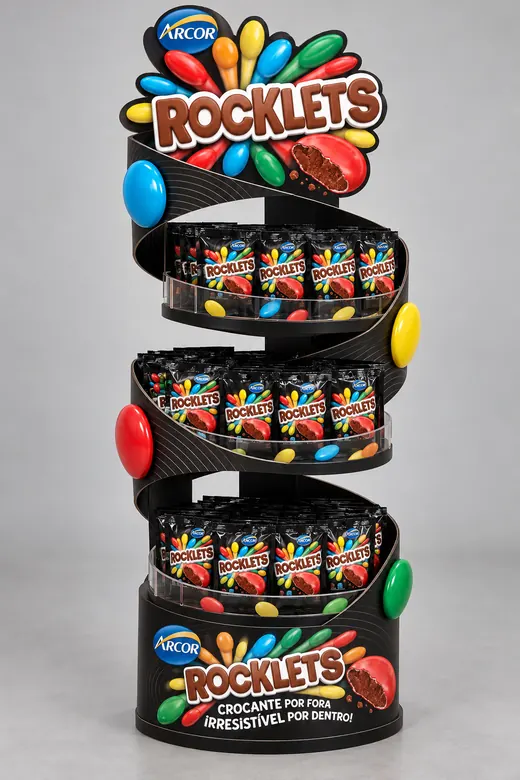
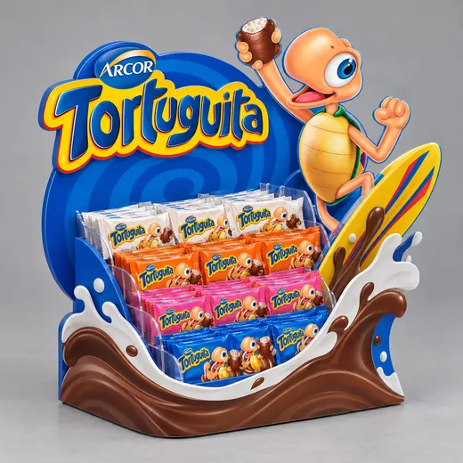
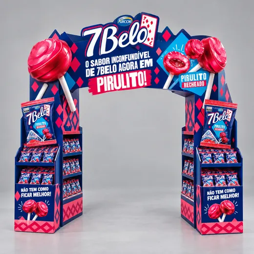
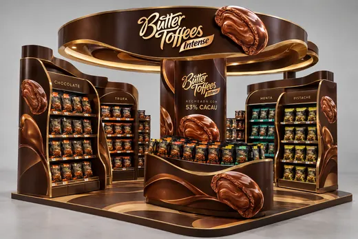
 ×
×Obrigado.
Ficamos à disposição para abrir qualquer número deste material contra a planilha de vocês, linha por linha.
Comercial e administrativo
Daniel Coimbra
Diretor Administrativo e Comercial
daniel.coimbra@75lab.com.br11 99127-0939Operação e trade
Caique Becker
Diretor de Operação e Trade Marketing
caique.becker@75lab.com.br11 98676-5634
75 LAB Estratégia, Design e Produção Ltda · CNPJ 55.470.982/0001-77 · CENU, Torre Norte, Av. das Nações Unidas, 12.901, Brooklin, São Paulo, SP · contato@75lab.com.br · 75lab.com.br
Arcor · Strategic Sourcing · Serviços de Criação e Ajuste de Artes · resposta ao RFQ de 23 de outubro · entrega em 30 de outubro de 2026
×